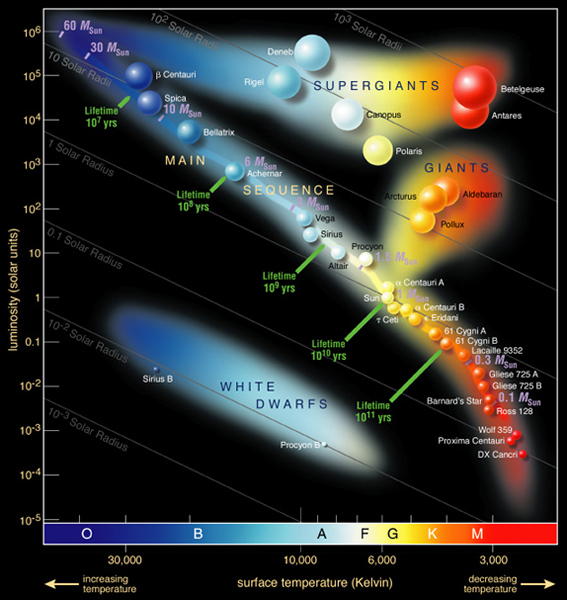
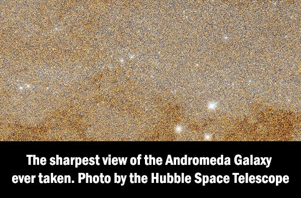

Psalm 19:1-2
The heavens declare the glory of God,
and the sky above proclaims His handiwork.
Day to day pours out speech,
and night to night reveals knowledge.
Student Notebook hyperlinks for module 16:
p. 205 in the SNB: link.apologia.com/ECPS2N/16.1 A video from Mr Sci Guy about the temperature and composition of stars.
Required Videos and Links:
Where Does The Sun Get Its Energy? by Veritasium by Australian physicist Derek Muller. He's one of my favorite science teachers.
Layers of the Sun Explained - Inner Layers by Science in Less than 5 Minutes and Astronimate
Fission vs. Fusion: What’s the Difference? by the U.S. Department of Energy
This video is slightly technical, but worth your time: The Sun - a Nuclear Powerhouse by Launch Pad Astronomy
Learning Physics_Types of Stars by Size, Color and Life Cycle by Video Physical Science
Stars and Galaxies: The Hertzsprung-Russell Diagram by Conceptual Academy (very helpful video until about 8:25)
Optional but Helpful:
Scale of the Universe by Cary and Michael Huang
If you haven’t seen this interactive size comparison program before, you need to take a look!
And for the very curious, cool maps about the size of God’s Creation:
Atlas of the Universe
A series of maps at different increments of light years away from our sun.
